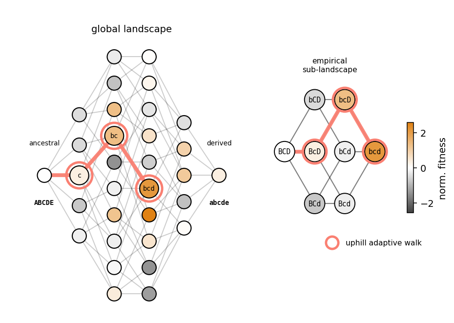
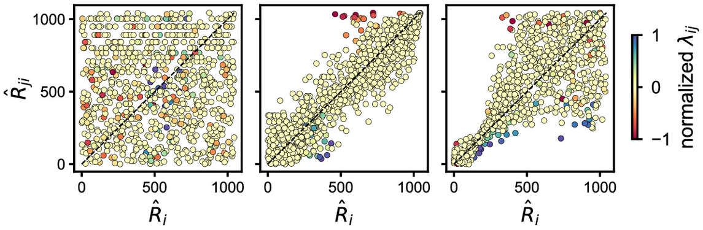

We work on a variety of topics across population and statistical genetics, usually combining theory with computational and empirical analyses. Ultimately, we would like to understand how physical and environmental constraints structure patterns of genetic variation within and across species at the molecular and genomic scales.
Bridging fitness landscape theory with empirical data

Evolution can be thought of as taking place in a high-dimensional fitness landscape which maps genotype-to-phenotype, an enduring abstraction first introduced by Sewall Wright in the 1930s. Researchers have made progress in describing how adaptation proceeds in random landscapes with different degrees and types of epistatic interactions among loci. At the same time, high-throughput sequencing and phenotyping techniques enable contemporary researchers unprecedented access to empirical fitness landscapes—however, the assayed fraction of the fitness landscape is still miniscule relative to its global dimension. We are interested in developing principled expectations for the structure of empirical fitness landscapes to answer the following questions:
- How does the choice of which sites to mutate distort the statistics of empirical fitness landscapes?
- What are the best strategies for exploring fitness landscapes, random, learned, and empirical?
- How can we generalize across the increasing numbers of high-throughput mutagenesis studies to learn fundamental properties of, e.g., protein and RNA, fitness landscapes?
-
Mutation choice biases the structure of empirical fitness landscapes.
Non-parametric inference of genotype-to-phenotype maps

Quantifying interactions among systems components, e.g., interactions among mutations, typically requires specification of a measurement scale. For example, it is often assumed that mutations combine additively or multiplicatively. However, misspecification of scale can result in over- or under-estimation of the importance of interactions among system components. We recently introduced a rank-based method, Resample and Reorder, for inferring interactions without an assumption about scale. We are working on developing several inference procedures inspired by this method with the following aims:
- Detecting the shape and dimension of genotype-to-phenotype maps from combinatorial mutagenesis experiments without parametric assumptions.
- Learning the dimension of genotype-to-fitness maps in high-throughput studies assaying fitness in numerous environments.
-
Distinguishing direct interactions from
global epistasis using rank statistics.
Link to paper.